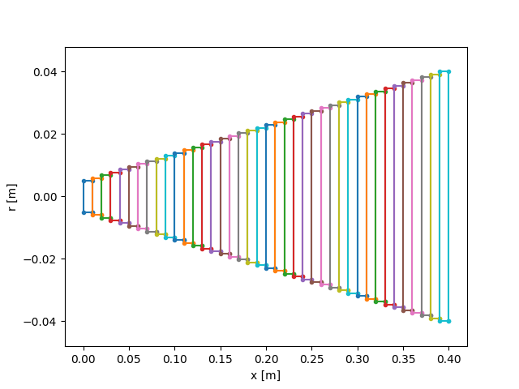
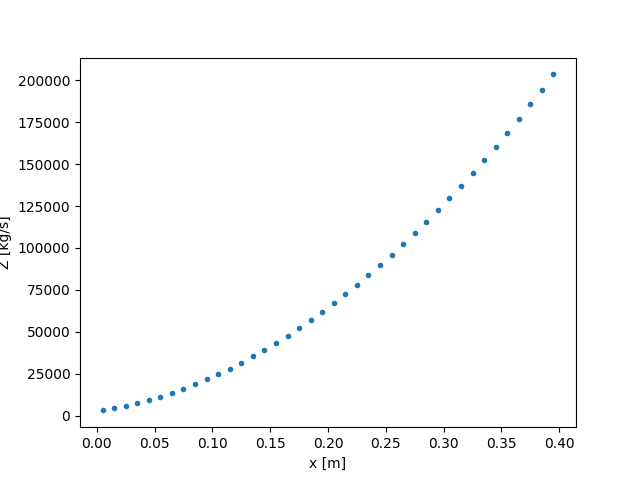

Note
Click here to download the full example code
Under the hood¶
What happens behind the scene to compute the wave propagation in rods.
Two cases are considered:
Wavepropconsiders a single rod (with section change);WP2considers several rods in contact (no section change within a rod with the actual way the rod is generated).
Waveprop was the first implementation from the work of Bacon 1993.
It was kept as it allows faster testing of new features since the computation
of the state of the bar is done internally, whereas this is done externally
in the case of WP2 (see below Segment).
import numpy as np
import matplotlib.pyplot as plt
from elwaspatid import Waveprop, WP2, Barhomo, Barhete
E = 210e9 # [MPa]
rho = 7800 # [kg/m3]
L = 1 # [m]
d = 0.02 # [m]
Wave propagation with Waveprop¶
Bar configuration: one bar at rest with an incident wave.
Indeed, Waveprop eats a single Barhomo continuous rod and
computes internally the propagation of force and velocity along the rod
and as time increases.
Since there is no contact interface (single rod), the implementation from
the work of Bacon 1993 is straightforward. For each time step:
1. compute the force and velocity at the left and right ends;
2. compute the force and velocity in themiddle of the bar (see Waveprop.__init__()).
All the force values can fill a single matrix, ditto for the velocities.
D = np.linspace(0.5, 4, 40)*d # bar with linearly increasing diamter
bb = Barhomo(dx=0.01, d=D, E=E, rho=rho)
incw = np.zeros(80) # incident wave
incw[0:20] = 1 # >0 means traction pulse
test = Waveprop(bb, incw, nstep=2*len(incw), left='free', right='free')
test.plot() # plot Force and Velocity space-time diagrams
bb.plot(typ='DZ') # plot discretization of the bar and impedance
![Force [N]](../_images/sphx_glr_plot_6_underHood_001.png)
![Particule velocity [m/s]](../_images/sphx_glr_plot_6_underHood_002.png)
- 
- 

Discretization of the rod in elements (from [Bacon 1993])¶
Wave propagation with WP2¶
WP2 allows several rods in contact, which means compression crosses
the contact interface whereas traction cannot cross the contact interface and
is therefore reflected.
WARNING: rods displacements are not computed, which means rods are considered to be stuck all the time. No loss of contact at the interfaces. This may not be always correct.
Since we consider several rods in contact, the velocity is discontinuous along the propagation axis. Hence, force and velocity cannot be computed globally and must be evaluated for each rod. Each rod stores force and velocity in two matrices.
# Bar configuration: one striker with initial velocity and one bar at rest
bar = Barhete([E, E], [rho, rho], [L, 0.5*L], [d, 0.8*d], nmin=6)
testk = WP2(bar, nstep=200, left='free', right='infinite', Vinit=5)
testk.plot()
![Force [N]](../_images/sphx_glr_plot_6_underHood_005.png)
![Velocity [m/s]](../_images/sphx_glr_plot_6_underHood_006.png)
![Displacement [m]](../_images/sphx_glr_plot_6_underHood_007.png)
Out:
Setting initial velocity of first segment (Vo=5)
Internally, the bar Barhete contains a list of Segment, one
for each independant rod. Each Segment has been discretized in nX
elements along the propagation axis.
print(bar.seg)
Out:
[
L: 1 m
Z: ['12714.7'] kg/s
Left: impact
Right: interf
nX: 13
,
L: 0.5 m
Z: ['8137.42'] kg/s
Left: interf
Right: free
nX: 7
]
Segment has the following methods:
Segment.initCalc()Segment.compMiddle()Segment.compLeft()Segment.compRight()
These methods are called by WP2.__init__() which, while looping over time,
iterates on all the Segment in the list provided by Barhete to
compute the state (Force, Velocity) of all the elements of each Segment.
XXX a word on Bar, used in Barhete
bar.bar_continuous.plot()

Total running time of the script: ( 0 minutes 2.823 seconds)